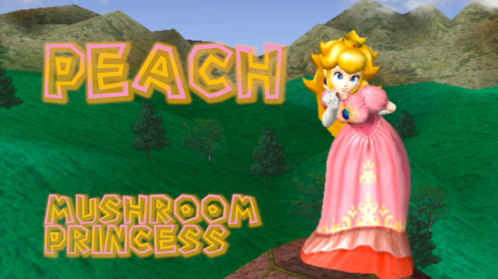

Princess Peach est la princesse de royaume de champignons, de la série Super Mario Bros. Mais dans SSBM, Peach n'a pas besoin de Mario pour la sauver. Au contraire, Peach est un personnage tres éfficace et tres difficile a combatre du a ses atouts uniques et son gameplan qui est tres différent des autres personnages. Peach utilise une combinaison de projectiles et contre attaques pour décimer la competition.

Peach est un personnages tres intéressant car malgré etre un des personnages les plus lents dans un jeu qui priorise la vitesse, elle réussi a exceller et se démarque comme un des meilleurs personnages du jeu. Ses plus grands atouts sont ses contre-attaques et son pouvoir unique, lévitation. ce pouvoir lui donne acces a des techniques uniques a peach et fait en sorte que peach excelle dans le combat rapproché et le edgeguarding (une technique qui permet d'empecher l'adversaire de revenir sur le terrain).